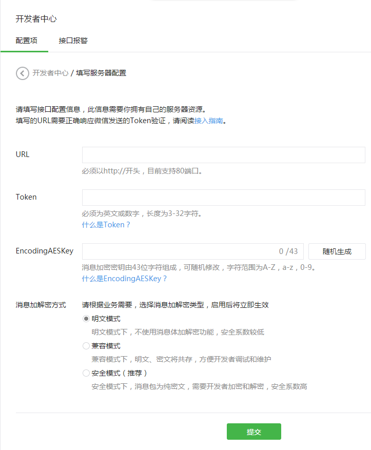
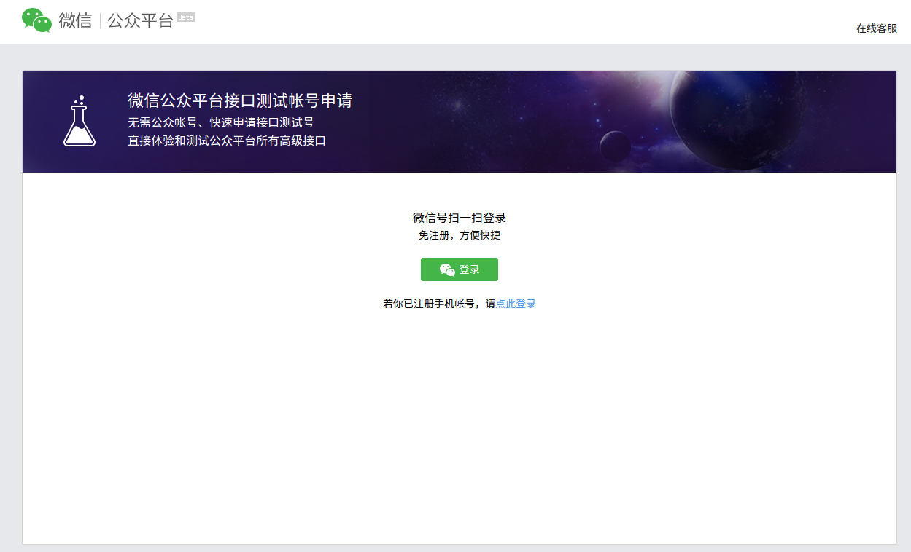
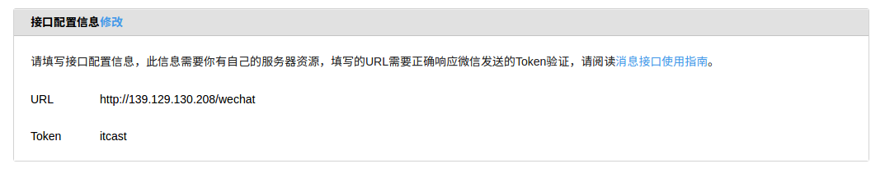

填写服务器配置
登录微信公众平台官网后，在公众平台后台管理页面 - 开发者中心页，点击“修改配置”按钮，填写服务器地址（URL）、Token和EncodingAESKey，其中URL是开发者用来接收微信消息和事件的接口URL。Token可由开发者可以任意填写，用作生成签名（该Token会和接口URL中包含的Token进行比对，从而验证安全性）。EncodingAESKey由开发者手动填写或随机生成，将用作消息体加解密密钥。
同时，开发者可选择消息加解密方式：明文模式、兼容模式和安全模式。模式的选择与服务器配置在提交后都会立即生效，请开发者谨慎填写及选择。加解密方式的默认状态为明文模式，选择兼容模式和安全模式需要提前配置好相关加解密代码，详情请参考消息体签名及加解密部分的文档。
微信公众号接口只支持80接口。
公众平台页面 
利用测试平台
测试平台登陆地址 http://mp.weixin.qq.com/debug/cgi-bin/sandbox?t=sandbox/login

